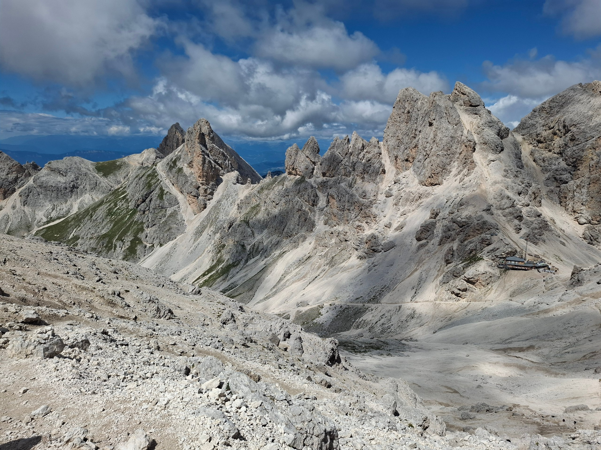

> SYSTEM READY...
> User: Maria_Vittoria
> Status: Apprendimento HTML/CSS in corso...
> Progetti: [MaaaV-f]
> Lavori Accademici: [Tesi]
>
> Hobbies: Montagna/Trekking/Escursioni. Qui potete trovare alcune foto scattate durante alcune gite estive!

Rifugio Santner, Dolomiti, 2734m.
Veduta dal Passo Antermoia, Dolomiti, 2770m.